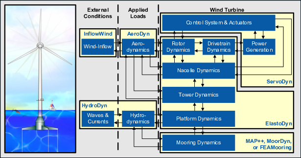
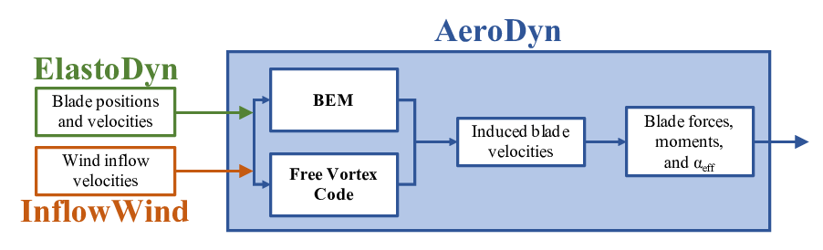
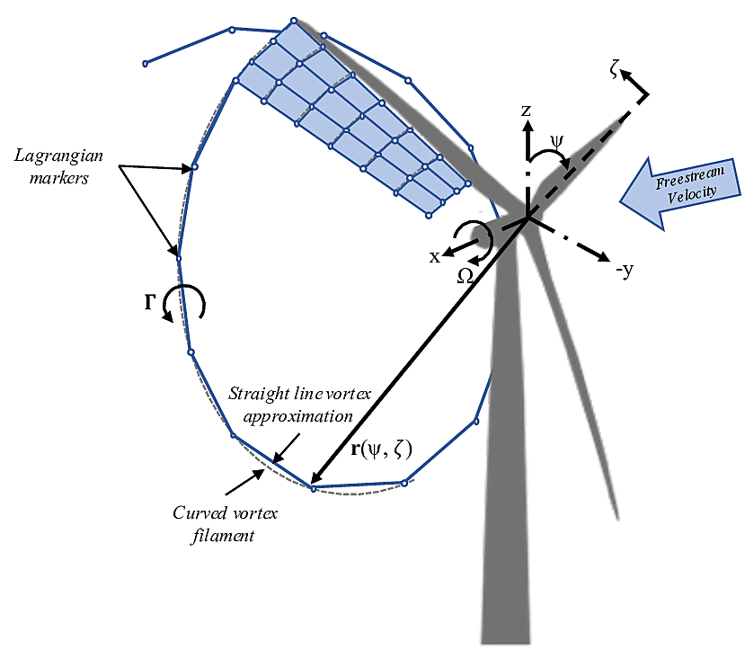

4.4.1. 소개
지난 수십 년 동안 로터 크기의 큰 증가로 인해 풍력 에너지 비용이 크게 절감되었습니다. 이러한 대형 터빈에 대한 중요한 고려사항 중 하나는 블레이드 유연성의 증가입니다. 특히 블레이드 편향이 크면 로터 평면에서 크게 벗어나는 스위프 영역이 발생할 수 있습니다. 이러한 편차는 블레이드 요소 운동량(BEM) 방법과 같은 일반적인 공기 역학 모델에서 사용되는 가정을 위반합니다. 이러한 방법은 평면에 포함된 축대칭 회전자 부하에만 유효한 액추에이터 디스크 가정에 의존합니다. 큰 블레이드 편향은 또한 터빈의 후류 근처에서 균일한 나선형 모양에서 갈라지는 원인이 될 수 있습니다. 더욱이, 터빈 블레이드와 국소적인 후류 사이의 상호작용이 증가할 수 있으며, 따라서 근접 후류의 위치와 역학을 설명하지 못하는 모델의 가정을 위반할 수 있습니다. 또한 매우 유연한 블레이드는 공기 역학적 효과의 불안정성과 3차원성을 증가시켜 정확하고 견고한 동적 실속 모델의 중요성을 높일 가능성이 높습니다. 단순한 엔지니어링 가정을 위반하는 복잡한 풍력터빈 상황이 많이 있습니다. 이러한 상황에는 직선이 아닌 블레이드 형상(예: 내장 곡률 또는 스윕)에 대한 정확한 공기역학적 하중을 얻는 것이 포함됩니다. 편요된 유입 또는 터빈 기울기로 인한 편향된 흐름; 그리고 규정을 준수하는 해상 부유 플랫폼 위에 터빈을 배치한 결과로 인한 큰 로터 운동.
유연한 플로팅 로터의 복잡성 증가를 설명하려면 충실도가 높은 공기 역학 모델이 필요합니다. 전산유체역학(CFD) 방법은 이러한 특징을 포착할 수 있지만 계산 비용으로 인해 실행 가능한 시뮬레이션 수가 제한됩니다. 이는 터빈 설계에 대한 부하 분석에서 중요한 고려 사항입니다. FVW 방법은 유사하게 복잡한 물리학을 모델링하는 동시에 CFD 방법보다 계산 비용이 저렴합니다. BEM 방법과 달리 FVW 방법은 동적 유입, 편향 후류, 팁 손실 또는 지면 효과를 설명하기 위해 임시 엔지니어링 모델에 의존하지 않습니다. 이러한 효과는 본질적으로 모델의 일부입니다. Rosenhead의 초기 치료([올라프-Ros31]), Winckelmans 및 Leonard의 와류 입자 방법 공식화([올라프-WL93]), 최근 혼합 오일러-라그랑지안 압축성 제형의 파파다키스([올라프-Pap14]). 풍력 에너지 분야에 오랫동안 적용되어 온 코드의 예는 GENUVP([올라프-Vou06]), 소용돌이 입자 방법 사용 및 AWSM([olaf-vG03]), 와류 필라멘트 방법을 사용합니다. 두 도구 모두 구조 솔버에 성공적으로 결합되었습니다. 이 방법은 Branlard et al.에 의해 확장되었습니다. ([올라프-BPG+15])는 와류 방법을 지속적으로 사용하여 전단 및 난류 유입에서 풍력터빈의 공탄성 시뮬레이션을 수행합니다. 대부분의 공식은 블레이드의 리프팅 라인 표현에 의존하지만 최근에는 점성-비점성 표현이 구조 솔버([olaf-SGarciaSorensenS17]).
OLAF(cOnvecting LAgrangian Filaments)는 움직이는 2개 또는 3개의 블레이드 수평축 풍력터빈에 대한 공기역학적 힘을 계산하는 데 사용되는 FVW(자유 와류 후류) 모듈입니다. 이 모듈은 개별 풍력터빈의 공기-수력-서보-탄성 역학을 해결하는 국립 재생 에너지 연구소(National Renewable Energy Laboratory) 물리 기반 엔지니어링 도구인 OpenFAST에 통합되었습니다. OLAF는 OpenFAST 모듈에 통합되어 있습니다. AeroDyn, 그림에 표시된 대로 기존 블레이드 요소 모멘텀(BEM) 옵션의 대안 그림 4.12 및 그림 4.13.


그림 4.12 OpenFAST 회로도


그림 4.13 OLAF 및 BEM 통합 AeroDyn
OpenFAST에 OLAF 모듈을 통합하면 OpenFAST의 공기-수력-서보-탄성 응답 기능과 함께 매우 유연한 터빈을 모델링할 수 있습니다. OLAF 모듈은 OpenFAST 모듈화 프레임워크([올라프-Jon13, 올라프-SJJ15]).
OLAF 모듈은 경계 순환 분포를 특징으로 하는 블레이드의 리프팅 라인 표현을 사용합니다. 경계 순환의 공간적 및 시간적 변화로 인해 후류에서 자유 소용돌이가 방출됩니다. OLAF는 정확한 시간 방식으로 터빈 후류를 해결하여 와류가 대류, 신장 및 확산되도록 합니다. OLAF 모델은 터빈 후류가 라그랑지안 마커로 이산화되는 라그랑지안 접근 방식을 기반으로 합니다. 라그랑주 마커를 사용하여 항적을 표현하는 방법에는 여러 가지가 있습니다([올라프-Bra17]). 본 연구에서는 그림과 같이 하이브리드 격자/필라멘트 방식을 사용합니다. 그림 4.14.


그림 4.14 Near-wake 격자, 블레이드 팁 소용돌이 및 라그랑주 마커의 진화
여기서 라그랑지안 마커의 위치는 각성 시간으로 정의되며, \(\zeta\)및 방위각 위치, \(\psi\). 블레이드의 후류 근처에는 격자 방법이 사용됩니다. 근거리 후류는 회전하지 않는 경우에 대해 사용자가 지정한 각도 또는 거리에 걸쳐 있습니다. 과거의 연구에서는 거의 깨어나는 영역이 \(30^\circ\) 이면 충분합니다([올라프-ALR02, 올라프-Lei06]), 높은 추력 및 기타 까다로운 조건에서는 더 큰 후류 근처가 필요한 것으로 나타났습니다. 가까운 후류 영역 이후 후류는 순간적으로 끝 와류와 뿌리 와류로 말려 올라가는 것으로 가정되며, 이는 나머지 후류에 대해 가장 지배적인 특징으로 가정됩니다([올라프-LBB02]). 각 라그랑지 마커는 2차 정확도에 근접한 직선 소용돌이 필라멘트에 의해 인접한 마커에 연결됩니다([올라프-GL02]). 후류는 블레이드 섹션의 스팬 방향 위치와 지정된 시간 단계(\(dt\)), AeroDyn의 시간 단계와 다를 수 있습니다. 선택적 초기화 기간 후에 후류는 이동하고 왜곡될 수 있으며, 따라서 표시가 하류로 대류됨에 따라 후류 구조가 변경됩니다. 계산 비용을 제한하기 위해 루트 및 팁 소용돌이는 지정된 거리 이후에 잘립니다(패널 수로 간주). nNWPanels) 터빈 하류. 후류 잘림은 헬름홀츠의 제1법칙을 위반하므로 잘못된 경계 조건이 발생합니다. 이를 완화하기 위해 웨이크는 지정된 버퍼 거리 사이의 버퍼 영역에서 "동결"됩니다. nFWPanelsFree및 이 플래그 값 아래에 nFWPanels. 이 완충 구역에서 마커는 평균 주변 속도로 대류됩니다. 이렇게 하면 잘림 오류가 최소화됩니다~([올라프-LBB02]). 완충 구역은 일반적으로 로터 1회전에 대한 대류 거리로 선택됩니다.
OpenFAST의 일부로 리프팅 라인/블레이드에서 유도된 속도가 AeroDyn 를 사용하여 각 블레이드 섹션에서 유효 블레이드 받음각을 계산한 다음 블레이드에 가해지는 공기역학적 힘을 계산하는 데 사용됩니다. OLAF 방법은 BEM 방법과 동일한 정보를 반환하지만 위에서 설명한 것과 같이 BEM 가정이 위반되는 영역에서 보다 정확한 계산을 허용합니다. OLAF 방법은 BEM보다 계산 비용이 더 많이 들기 때문에 두 방법 모두 OpenFAST에서 계속 사용할 수 있으며 사용자는 어떤 방법이 사용되는지 AeroDyn 입력 파일입니다.
OLAF 입력 파일은 후류 대류 및 순환 솔루션 방법을 정의합니다. 웨이크 크기 및 길이 옵션; 라그랑지안 마커 정규화(점성 코어) 방법; 및 기타 시뮬레이션 및 출력 매개변수. 가까운 후류와 먼 후류의 범위는 로터 직경의 무차원 길이로 지정됩니다. 소용돌이 요소에 대해 다양한 정규화 함수를 사용할 수 있습니다. 또한 경계 및 후류 와도의 정규화 매개변수를 계산하는 다양한 방법을 선택할 수 있습니다. 특히, 점성 확산은 정규화 매개변수를 동적으로 변경하여 설명할 수 있습니다. Wake 시각화 출력 옵션도 사용할 수 있습니다.
이 문서는 다음과 같이 구성되어 있습니다. 섹션 4.4.3.1 에서는 OLAF 다운로드, 컴파일 및 실행을 다룹니다. 섹션 4.4.4 는 OLAF 입력 파일과 수정 사항을 설명합니다. AeroDyn 입력 파일. 섹션 4.4.5 는 OLAF 출력 파일을 자세히 설명합니다. 섹션 4.4.6 는 자유 와류 후류 방법과 통합을 포함하여 OLAF 이론에 대한 개요를 제공합니다. AeroDyn 모듈. 예제 입력 파일과 출력 채널 목록은 부록 A, B, C에 자세히 설명되어 있습니다.